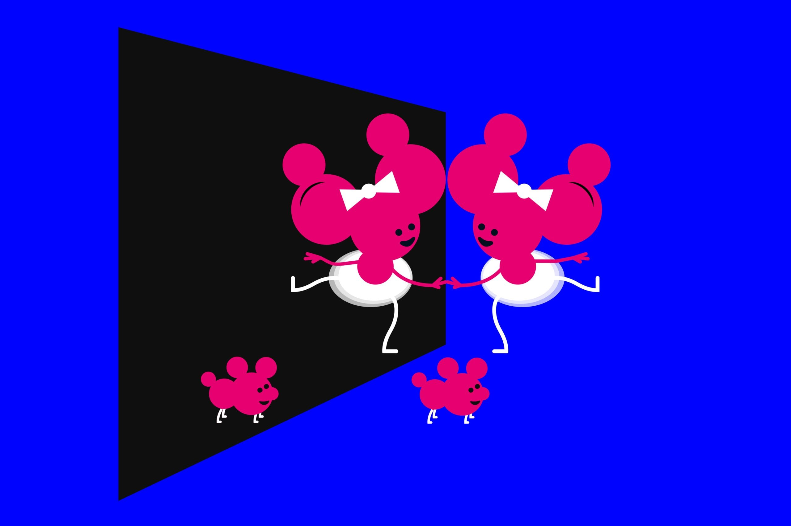

October 07, 2026
The 2026 Nobel Prize in Chemistry Solved the Mystery of Life's Mirror Images

Illustration: Johan Jarnestad / Royal Swedish Academy of Sciences
The 2026 Nobel Prize in Chemistry has been awarded to Henri B. Kagan and Kenso Soai, for "the discovery of non-linear effects and autocatalysis in asymmetric organic synthesis." Translation: they figured out how to make chemistry do what only life itself had ever done — pick one mirror image and leave the other alone.
The announcement
The Royal Swedish Academy of Sciences announced the prize on Wednesday, October 7, 2026. The two laureates share the prize sum of 12 million Swedish crowns, about $1.2 million.
Kagan, 95, is a French chemist affiliated with Université Paris-Sud in Orsay, France. Soai, 76, is a Japanese chemist at the Tokyo University of Science. Their work spans four decades — and one of them nearly missed the news entirely.
Why hands matter
Many molecules that are fundamental to life come in two forms that are mirror images of each other, like your left and right hands. Chemists call them chiral — from the Greek word for hand. They look identical, but they are not.
Here's the puzzle that stumped chemists for more than a century: living organisms use almost exclusively one of the two forms — a phenomenon called homochirality. The other form is simply absent from the chemistry of life. Ever since Louis Pasteur noticed this asymmetry in the 1800s, scientists have wondered how it could possibly emerge on its own.
In the lab, it was a stubborn problem. Chemical reactions naturally produce a 50-50 mix of both mirror forms. That matters enormously for medicine: many drugs are chiral, and typically only one of the two forms has the desired therapeutic effect — while the other may do nothing at all, or worse.
"Henri Kagan and Kenso Soai have provided a solution to a chemical mystery that is over a century old: how homochirality can emerge spontaneously," said Heiner Linke, chair of the Nobel Committee for Chemistry. "The chemical reactions they have developed are spectacular."
Two breakthroughs, decades apart
In 1986, Kagan discovered a way to tilt chemical reactions toward producing more of one mirror molecule than the other, using catalysts — and crucially, the effect was non-linear: a small asymmetry in the catalyst produced a much larger one in the products. The discovery was revolutionary for chemists who design reactions for manufacturing pharmaceuticals, flavors, scents, and new materials.
Then Soai went further. Beginning in 1995, he designed a chemical reaction in which only one of the two possible mirror images was formed — and by 2003, he had achieved it. His "Soai reaction" works through autocatalysis: one mirror form of a molecule catalyzes the production of more of itself, amplifying a tiny initial asymmetry until it dominates the entire reaction. "Other than life itself, no one had previously achieved this feat," the Nobel committee noted.
The phone call
Soai was out shopping near his home when the committee reached him. He called it "one of the most exciting days" of his life, and said he was glad to share the prize with Professor Kagan.
The committee, meanwhile, had a harder time tracking down Kagan — the third-oldest person ever to receive a Nobel Prize. His selection also settles an old grudge: in 2001, France's research minister complained publicly to the Nobel Foundation when Kagan was passed over for a prize in this very field. A quarter century later, the call finally came.
Why it matters
Kagan and Soai's work doesn't just answer a century-old question about the origins of life's asymmetry — it reshaped an entire industry. Modern pharmaceutical manufacturing depends on asymmetric synthesis: every chiral drug that works precisely because it's the right hand and not the left owes something to this chemistry.
The chemistry prize is the third of this year's Nobels to be unveiled, following Monday's medicine prize and Tuesday's physics prize. The medals will be presented by Sweden's King Carl XVI Gustaf at a ceremony in Stockholm on December 10.
Last year's chemistry prize went to three scientists for molecular structures that can trap vast quantities of gas — a discovery with implications for capturing greenhouse gases and harvesting moisture from deserts.
Sources: CNN (Oct 7, 2026), Reuters, New Scientist, Phys.org.
Source: CNN — read the original report
← Back to latest stories